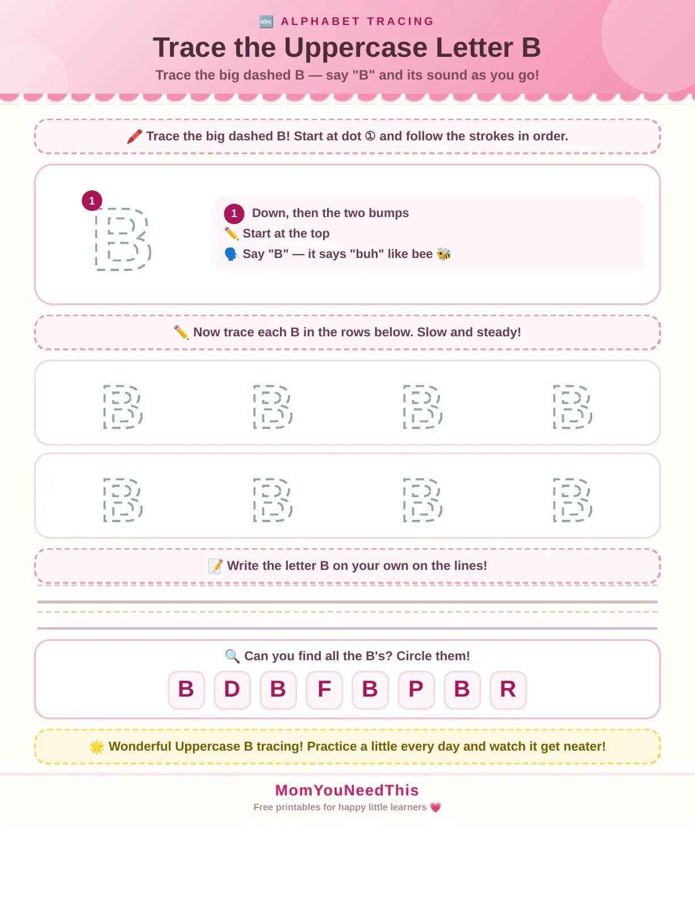

Uppercase Letter B Free Printable Uppercase Letter B Tracing Activity For Kids
Capital B is really two shapes in one — a straight line, then two curves. This free printable uppercase letter b tracing worksheet gives toddlers and preschoolers a fun, no-prep way to practice both bumps — say the B sound from bear and ball as your child traces, print it at home, and learn the letter B through play.
Quick Answer
This free printable helps toddlers and preschoolers practice tracing the uppercase letter B — a straight back with two bumps stacked on it. The worksheet includes large guided tracing lines, directional arrows, and fun practice rows that teach the order: line first, then bump, then bump. Print as many copies as you need at home, no signup required — tracing those bumps again and again is how little hands build fine motor skills and letter recognition.
At a Glance
- Ages: Toddlers and preschoolers
- Activity: Tracing uppercase B — a straight back with two bumps stacked on it
- Skills: Letter B formation and pencil control
- Format: Printable tracing worksheet (PDF)
- Cost: Free, no signup
✏️ Trace The Letter B
Use the printable to help your child trace the uppercase letter B, drawing the straight line first and adding the two bumps one at a time. Practice making the bottom bump a little bigger than the top one, and build confidence with early letter formation and writing skills.
Free Uppercase Letter B Tracing Printable

How To Use This Printable
- Download and print the letter B pages on letter-size paper. The print button opens the full-size page in a new tab if you prefer to print from there.
- Say the letter name and sound together before your child starts: “B says /b/, like bear, ball and banana.”
- Trace slowly: straight line down first, then the top bump, then the bottom bump. If the bumps come first the letter falls apart — the line is the backbone.
- Play I-spy with B words around the house — a ball, a book, a banana in the fruit bowl — to lock in the learning.
🔤 All About Capital B
Capital B is a straight line with two bumps. Start at the top and draw a straight line down to the ground line. Then go back to the top: curve out to the middle line for the first bump, and curve out again — a little wider — down to the ground line for the second bump. The bottom bump is usually the bigger of the two.
The letter B makes one clear sound, /b/ — the sound at the start of bear, ball, banana, bird and bus. Those are good words to say out loud while your child traces each row.
Capital B has special jobs: it starts sentences, and it begins names of people and pets — like the B in Ben and Bella. Every letter on this page is the big version, so little hands get plenty of practice with the line and its two bumps.
Why Trace Uppercase Letters?
Uppercase letters are usually the first ones children learn to write, and B teaches an important lesson: some letters are built from parts, in an order. The straight line anchors the letter, and the two bumps practice the curved strokes children will need for P, R and D as well. Every finished B builds fine motor control and early handwriting strength.
🎁 Keep Exploring Free Learning Activities
Discover more printable activities, toddler resources, and learning ideas created for busy parents.
🎁 View All Free Resources❓ Uppercase Letter B Tracing FAQ
Is this uppercase letter B tracing printable really free?
Yes — this uppercase letter B tracing printable is 100% free to download and print at home. No signup and no payment needed. Just tap the download button and print as many copies as you like — the two bumps take practice, so fresh copies for every session are a good thing.
What ages is this printable best for?
It is made for toddlers and preschoolers. Capital B is a step up from single-curve letters because it has three parts — line, bump, bump — so it suits children who have tried C and O first. Little ones can enjoy it with a grown-up’s help, while older preschoolers can work on making the bottom bump bigger than the top by themselves.
How can we practice the letter B at home?
Say the letter’s name and sound — /b/, like bear — each time your child starts a row, and count the bumps out loud: one, two. Hunt for capital B at the start of names, like Ben and Bella, and on book covers. A few short, playful sessions each week beat one long one.
🔗 More Free Printables You’ll Love
- Free Alphabet Coloring Pages Free printable alphabet coloring pages for little learners.
- Free Lowercase Letter B Tracing Free printable lowercase letter b tracing for little learners.
- Free Uppercase Letter C Tracing Free printable uppercase letter c tracing for little learners.
- Free Uppercase Letter D Tracing Free printable uppercase letter d tracing for little learners.